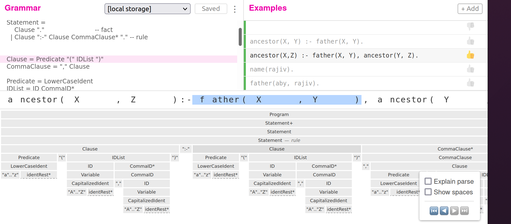

Objective
This post shows you how to create a toy Datalog, a laughably incomplete subset of the Datalog language, using an Ohm parser for the syntax and a Glue parser for the semantics. The final output is a Python program.
Motivation
I think the time has come for me to explore creating domain specific languages(DSL) to build software systems. I feel the benefits are:
- write less code: I hope to generate the required code from the DSL code.
- write code readable by domain experts. I hope to write executable code in that DSL that looks very similar to what an end user/domain expert would understand. Almost like writing English with some structure so that it can be executed. This enables fruitful and rapid interaction with domain experts/end users very early in the project preventing miscommunication errors.
- decouple business logic from implementation. I hope to capture the business rules/business workflows at the level of the DSLs. This will allow me to easily change the implementation underneath without having to change the DSL code that captures the complex business logic. For e.g. I might initially generate simple Python code from my DSL but later I may generate performant code using multiprocessing libraries or even SQL code, all without changing my code written in the DSL. I just change the compiler.
I hope to write a bigger post later explaining why I think DSLs are something worth exploring (ask me if you are interested.)
Problem Statement
I have a library in Python, called mercylog that is like Datalog. In this post, I want to take actual Datalog code and compile it to Python code which has mercylog statements. Let’s go further into what that means.
I’m first going to show how to express the example in SQL as all of us are familiar with it. Imagine a database with tables parent, man and woman.
CREATE TABLE parent (
name varchar,
child varchar
);
CREATE TABLE man (
name varchar
);
CREATE TABLE woman (
name varchar
);
INSERT INTO parent (name, child)
VALUES
('abe', 'bob'),
('abby', 'bob'),
('bob', 'carl'),
('bob', 'connor'),
('beatrice', 'carl');
INSERT INTO man(name)
VALUES
('abe'),
('bob');
INSERT INTO woman(name)
VALUES
('abby'),
('beatrice');
/* Query. Find Fathers */
select man.name as father, parent.child from man inner join parent ON man.name = parent.name;
/* Pasting the query result here as well */
name child
-----------
bob carl
bob connor
abe bob Now, I really like a language called Datalog. I have written an outdated but still understandable post here (raj: I’ll post a link soon). It’s an alternative to SQL. I even wrote a prototype Python library named mercylog to be able to execute Datalog like programs in Python.
Let’s translate the above SQL to a simple variant of Datalog.
parent(abe, bob).
parent(abby, bob).
parent(bob, carl).
parent(bob, connor).
parent(beatrice, carl).
man(abe).
man(bob).
woman(abby).
woman(beatrice). <=========== This and above are facts
father(X, Y) :- man(X), parent(X, Y). <============ This is a rule
father(X, Y). <============= This is my query. Should be same result as SQL
X Y
-----------
bob carl
bob connor
abe bob In Datalog, rows in a table are called facts. X and Y are special logic variables which are different from our regular Python variables. They are only relevant within a statement and are used to link data across relations. e.g. X signifies the same person in father, man and parent in the single rule above. (raj: I’ll post a link soon to explain more). parent, man, woman are called relations just as in regular databases. Code is written as rules. You can read the rule above as ‘X is a father of Y if X is man and X is the parent of Y’. The query is to find me all father and child combinations i.e. father(X, Y)
Note the schema creation step and explicit columns names(i.e. name, child for parent) are missing in this simplistic example of a Datalog variant(there are many of them). This is not saying that oh look, Datalog has so much less code than SQL so it’s better. In fact the opposite, I want explicit schema creation etc. in Datalog but that’s another project.
Now, I have a prototype Python library called mercylog. Similar code there would be
from mercylog import R, V, and_, db
# Some mercylog helper functions to define variables(V) and Relations(R)
X = V.X
Y = V.Y
parent = R.parent
man = R.man
woman = R.woman
father = R.father
# Let's define the data and rules and query in a single list.
facts_rules_query = [
parent("abe", "bob"),
parent("abby", "bob"),
parent("bob", "carl"),
parent("bob", "connor"),
parent("beatrice", "carl"),
man("abe"),
man("bob"),
woman("abby"),
woman("beatrice"),
father(X,Y) << and_(man(X), parent(X, Y)), # rule
father(X, Y), # query
]
ds = db() # Create an in memory database
result = ds(facts_rules_query) # Execute the query
print(result.df())
# Result of above print statement
X Y
0 bob connor
1 bob carl
2 abe bob
Compiling
The two ‘simple’ stages of creating a compiler are:
- Creating a Parse Tree: writing a grammar to take raw text and convert that into a parse tree.
For e.g., if the raw text is the mathematical expression (2+x)^(3-y), the corresponding parse tree would be below.

For this, we will use Ohm
- Assigning Semantics to Parse Tree: Taking the parse tree from the above phase and assigning some meaning to it. i.e. generating code that executes. In our case, we’ll be generating Python code. We could use Ohm for this too but I’ll use a DSL called Glue in the project parse created by Paul Tarvydas.
NOTE: Glue is very very much a prototype. It can fail across many edge cases. If this interests you, Paul is looking for programmers who can help him build out his vision.
Creating a Parse Tree
Alright, time to dive in. We build the grammar for our toy Datalog. Ohm has an excellent grammar editor which allows one to write a grammar, test it with examples and see the ‘concrete syntax tree’ i.e. how a concrete example of Datalog code breaks out into a parse tree.

Let’s start with the smallest Ohm grammar
datalog {
Program = Statement+
}This is just saying that my Datalog code is a Program with one or more Statements. The + indicates one or more.
What’s a Statement? Well, in the simplest case, we have a fact, e.g. parent(abe, bob). and then we have a rule e.g. father (X, Y) :- man(X), parent(X, Y).. I see a sub pattern there as relation (Variable1, Variable2). I’ll call this a Clause and then I’ll worry later how to parse it. So the rule becomes Clause :- Clause, Clause. or even Clause :- Clause, Clause, Clause... We have to capture the pattern , Clause 0 or many times. The way we do it in Ohm is like this.
Statement =
Clause "." -- fact
| Clause ":-" Clause CommaClause* "." -- rule
CommaClause = "," Clause-- fact and -- rule look like comments but they are more than that. I’ll explain later below.
Cool, what’s a Clause? It’s like relation(Variable1, Variable2,..,VariableN). I’m going to worry about the ‘variable’ number of variables later. For now, I’ll call it
Clause = Relation "(" IDList ")"Ok, What’s a Relation? It’s a lower case string e.g. father and it has to start with a lower case letter(a Datalog convention). We need to capture single letter relations e.g a in a(X,Y) or bigger relations e.g. father
Relation = LowerCaseIdent
LowerCaseIdent = "a" .. "z" identRest*
identRest = "0-9" | "_" | "A" .. "Z" | "a" .. "z"identRest captures the pattern that the rest of the identifier can can either be a number, underscore or upper case or lower case letters.
Now, IDList. You’ll notice a trend here with CommaClause and IDList. It has the same feeling like designing functions. Often, I’ll write pseudocode on how I want a function to look and I’ll design the subroutines without actually implementing them. Just the subroutine calls. Once I like what I see, I’ll then go ahead and implement each subroutine. It feels similar here.
IDList has the same feel like Clause, doesn’t it?
IDList = ID CommaID*
CommaID = "," IDAn ID is going to be either a literal(or constant) like abe in man(abe) or a variable like X and Y in father(X, Y). A variable starts with a capital letter as per Datalog convention.
ID = Variable | Literal
Variable = CapitalizedIdent
Literal = LowerCaseIdent
#LowerCaseIdent and identRest were already explained before
CapitalizedIdent = "A" .. "Z" identRest*So there you go, I think that’s it. Let’s see the whole ohm grammar file.
datalog {
Program = Statement+
Statement =
Clause "." -- fact
| Clause ":-" Clause CommaClause* "." -- rule
Clause = Relation "(" IDList ")"
CommaClause = "," Clause
Relation = LowerCaseIdent
IDList = ID CommaID*
ID = Variable | Literal
CommaID = "," ID
Variable = CapitalizedIdent
Literal = LowerCaseIdent
LowerCaseIdent = "a" .. "z" identRest*
CapitalizedIdent = "A" .. "Z" identRest*
identRest = "0-9" | "_" | "A" .. "Z" | "a" .. "z"
}Glue
Now that we have the Ohm grammar, it’s time to use it to assign some meaning to the parse tree that it’ll generate from our sample Datalog program. Ohm actually already allows us to do that too.
However, Paul Tarvydas found that he was writing a lot of boilerplate code and decided to ….. write another DSL for it! It’s called Glue.
CAUTION: Glue is a prototype and does not cover all edge cases.
The way Glue works is you take all the symbols in your Ohm grammar e.g. Clause, ID and write a corresponding piece of JavaScript code to be generated. Glue also simplifies it in the way that you can just write the string of code(Python in my case) that you want to generate. Let’s start with a dummy example.
Program [@Statement] = [[ ${Statement} ]]Here, Program and Statement are from the Ohm grammar above. Since we have multiple statements, we use @ to indicate that. The code to be generated is between [[ and ]]. And we refer to the code with JavaScript interpolation code ${}. What is the value of Statement above? Well, it’ll be populated ‘somehow’ by Ohm with the values from the rest of the grammar.
I think the above example was too easy for you :) . Let’s show you what I have to actually do.
If you look at my required Python Mercylog code above, I need to first generate some generic, wrapper like Python code like mercylog import statements and initialization no matter what the Datalog code is to be generated.
from mercylog import R, V, and_, db
fb = [ .. statements ..] # refer to facts_rules_query above
ds = db()
result = ds(fb)
print(result.df()) The way we specify that in Glue is:
Program [@Statement] = [[from mercylog import R, V, and_, db\nfb = \[ ${Statement}\] \nds = db() \nresult = ds(fb) \nprint(result.df()) ]]It may not look very clean and Paul may have some way to improve on this but I just wanted to give you an idea.
We need to escape special characters in Glue. For e.g., I have to use [] for Python but that means something in Glue too so I have to escape it e.g. \[
Where do we get statements from? Well, there was something I didn’t mention before, that it’s time to talk about now. Notice the -- rule and -- fact in our Ohm grammar?
Statement =
Clause "." -- fact
| Clause ":-" Clause CommaClause* "." -- ruleThey look like comments but they are called case labels in Ohm. They are a way to specify different execution paths for Glue (actually, for Ohm, which Glue uses underneath). So we have two entries in Glue for Statement, Statement_fact and Statement_rule
Note, that the number of parameters for e.g. Statement_fact match closely with how it’s grammar is specified. Using k in kperiod is just a convention, I think, to indicate that it’s a literal unlike the others.
If it’s a fact, I just have to add it to the list fb. The code containing fb is generated above for Program [@statement]. So I take clause which will be generated later and just add a , to it, as I’m adding it to a Python list which wants a comma between list elements. For rules, I have to convert Statement_rule to the corresponding mercylog statement i.e. clause1 << and_(...)
Statement_fact [clause kperiod] = [[${clause},\n]]
Statement_rule [clause1 kcolondash clause @commaclause kdot] = [[${clause1} << and_(${clause}${commaclause}),\n]]I think the rest of the code follows the same principles explained above.
Here’s the final Glue Code.
Program [@Statement] = [[from mercylog import R, V, and_, db\nfb = \[ ${Statement}\] \nds = db() \nresult = ds(fb) \nprint(result.df()) ]]
Statement_fact [clause kperiod] = [[${clause},\n]]
Statement_rule [clause1 kcolondash clause @commaclause kdot] = [[${clause1} << and_(${clause}${commaclause}),\n]]
Clause [predicate klpar idlist krpar] = [[${predicate}(${idlist})]]
CommaClause [kcomma clause] = [[\,${clause}]]
Relation [lowercaseident] = [[R.${lowercaseident}]]
IDList [id @commaid] = [[${id}${commaid}]]
ID [id] = [[${id}]]
CommaID [kcomma id] = [[\, ${id}]]
Variable [capident] = [[V.${capident}]]
Literal [lowercaseident] = [["${lowercaseident}"]]
LowerCaseIdent [c @cs] = [[${c}${cs}]]
CapitalizedIdent [c @cs] = [[${c}${cs}]]
identRest [c] = [[${c}]]Code Generation
So we have the Ohm and Glue grammars. We can now take a Datalog program and generate Python code. Using the pfr tool in the repo parse tool which reads an Ohm, Glue file and input source language file, we can generate the Python code.
pfr test.datalog datalog.ohm mercylog.glue > test.py NOTE: I had to hack the code above a bit to make it work for me but Paul may have updated his repo to make it work seamlessly for all. The emphasis here is not on having production ready tools but to rapidly explore ideas in DSL building and get feedback.
That generates
from mercylog import R, V, and_, db
fb = [ R.parent("abe", "bob"),
R.parent("abby", "bob"),
R.parent("bob", "carl"),
R.parent("bob", "connor"),
R.parent("beatrice", "carl"),
R.man("abe"),
R.man("bob"),
R.woman("abby"),
R.woman("beatrice"),
R.father(V.X, V.Y) << and_(R.man(V.X),R.parent(V.X, V.Y)),
R.father(V.X, V.Y),
]
ds = db()
result = ds(fb)
print(result.df()) Not that it’s not indented properly, nor have I done any optimizations. For e.g. V.X could be refactored to X=V.X like in the Python code showed in the very beginning. But that’s another exercise.
Now to test my code, I have to create a project with mercylog in my dependencies and then do
python test.pyand I’ll see
Y X
0 connor bob
1 bob abe
2 carl bobThe End
There you go! a first stab at making DSLs. I hope you liked it. If you think about it, we ‘compiled’ a DSL(Datalog) using two other DSLs(Ohm and Glue). It makes you wonder, can we do everything in DSLs?
I would like to thank Paul Tarvydas for his excellent support while I figured it out. Please do check his blog and ideas.
Extra.
Ohm has a built-in to express a List of tokens, e.g.
IDList = ID CommaID*above can be written asIDList = ListOf<ID, ",">. The reason we don’t use it is becauseGluedoes not support it. The side benefit is that I can show you the foundation blocks of PEG, the grammar language used by Ohm.A great Datalog variant with explicit column names is Logica